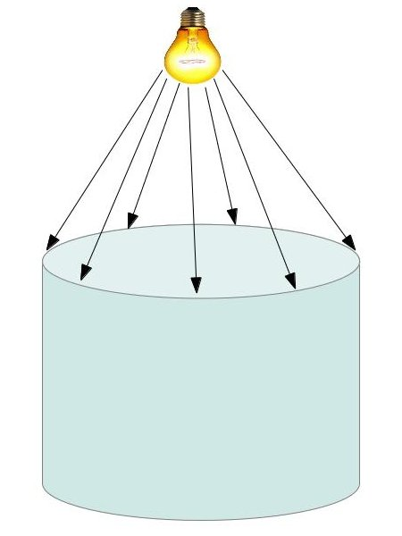
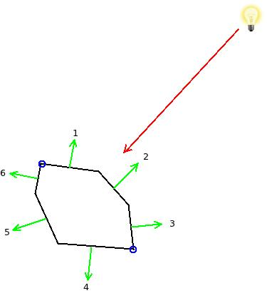
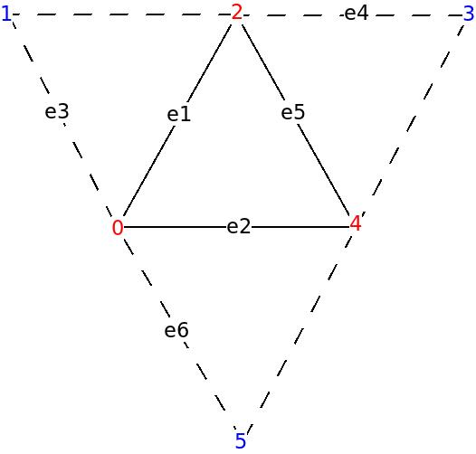

Background
Today we are going to discuss one way in which the silhouette of an object can be detected. To make things clearer, I'm referring to the silhouette of a 3D object which is created when light falls upon it from an arbitrary direction. Moving the light source will likely change the silhouette accordingly. This is entirely different from silhouette detection in image space that deals with finding the boundaries of an object in a 2D picture (which is usually not dependant on the location of the light source). While the subject of silhouette detection may be interesting by itself, for me its main goal is as a first step in the implementation of a Stencil Shadow Volume. This is a technique for rendering shadows which is particularly useful when dealing with point lights. We will study this technique in the next tutorial (so you may refer to this tutorial as "Stencil Shadow Volume - Part 1"...).
The following image demonstrates the silhouette that we want to detect:
In the image above the silhouette is the ellipsis which is touched by the light rays.
Let us now move to a more traditional 3D language. A model is basically composed of triangles so the silhouette must be created by triangle edges. How do we decide whether an edge is part of the silhouette or not? The trick is based on the diffuse light model. According to that model the light strength is based on the dot product between the triangle normal and the light vector. If the triangle faces away from the light source the result of this dot product operation will be less than or equal to zero. In that case the light doesn't affect the triangle at all. In order to decide whether a triangle edge is part of the silhouette or not we need to find the adjacent triangle that shares the same edge and calculate the dot product between the light direction and the normals of both the original triangle and its neighbor. An edge is considered a silhouette edge if one triangle faces the light but its neighbor does not.
The following picture shows a 2D object for simplicity:
The red arrow represents the light ray that hits the three edges (in 3D these would be triangles) whose normals are 1, 2 and 3 (dot product between these normals and the reverse of the light vector is obviously greater than zero). The edges whose normals are 4, 5 and 6 are facing away from the light (here the same dot product would be less than or equal to zero). The two blue circles mark the silhouette of the object and the reason is that edge 1 is facing the light but its neighbor edge 6 does not. The point between them is therefore a silhoette. Same goes for the other silhouette point. Edges (or points in this example) that face the light as well as their neighbors are not silhoette (between 1 and 2 and between 2 and 3).
As you can see, the algorithm for finding the silhouette is very simple. However, it does require us to have knowledge of the three neighbors of each triangle. This is known as the Adjacencies of the triangles. Unfortunately, Assimp does not support automatic adjacencies calculation for us so we need to implement such an algorithm ourselves. In the coding section we will review a simple algorithm that will satisfy our needs.
What is the best place in the pipeline for the silhouette algorithm itself? remember that we need to do a dot product between the light vector and the triangle normal as well as the normals of the three adjacent triangles. This requires us to have access to the entire primitive information. Therefore, the VS is not enough. Looks like the GS is more appropriate since it allows access to all the vertices of a primitive. But what about the adjacencies? luckily for us, the designers of OpenGL have already given it much thought and created a topology type known as 'triangle with adjacencies'. If you provide a vertex buffer with adjacency information it will correctly load it and provide the GS with six vertices per triangle instead of three. The additional three vertices belong to the adjacent triangles and are not shared with the current triangle. The following image should make this much clearer:
The red vertices in the above picture belong to the original triangle and the blue ones are the adjacent vertices (ignore the edges e1-e6 for now - they are referenced later in the code section). When we supply a vertex buffer in the above format the VS is executed for every vertex (adjacent and non adjacent) and the GS (if it exists) is executed on a group of six vertices that include the triangle and its adjacent vertices. When the GS is present it is up to the developer to supply an output topology but if there is no GS the rasterizer knows how to deal with such a scheme and it rasterizes only the actual triangles (ignoring the adjacent triangles). One of the readers informed me that such a setup has produced an error on his Macbook with Intel HD 3000 so if you run into a similar problem simply use a pass thru GS, or change the topology type.
Note that the adjacent vertices in the vertex buffer have the same format and attributes as regular vertices. What makes them adjacent is simply their relative location within each group of six vertices. In the case of a model whose triangles are continuous the same vertices will sometimes be regular and sometimes adjacent, depending on the current triangle. This makes indexed draws even more attractive due to the saving of space in the vertex buffer.
Source walkthru
(mesh.cpp:204)
void Mesh::FindAdjacencies(const aiMesh* paiMesh, vector& Indices)
{
for (uint i = 0 ; i < paiMesh->mNumFaces ; i++) {
const aiFace& face = paiMesh->mFaces[i];
Face Unique;
// If a position vector is duplicated in the VB we fetch the
// index of the first occurrence.
for (uint j = 0 ; j < 3 ; j++) {
uint Index = face.mIndices[j];
aiVector3D& v = paiMesh->mVertices[Index];
if (m_posMap.find(v) == m_posMap.end()) {
m_posMap[v] = Index;
}
else {
Index = m_posMap[v];
}
Unique.Indices[j] = Index;
}
m_uniqueFaces.push_back(Unique);
Edge e1(Unique.Indices[0], Unique.Indices[1]);
Edge e2(Unique.Indices[1], Unique.Indices[2]);
Edge e3(Unique.Indices[2], Unique.Indices[0]);
m_indexMap[e1].AddNeigbor(i);
m_indexMap[e2].AddNeigbor(i);
m_indexMap[e3].AddNeigbor(i);
}
Most of the adjacency logic is contained in the above function and a few helper structures. The algorithm is composed of two stages. In the first stage we create a map between each edge and the two triangles that share it. This happens in the above for loop. In the first half of this loop we generate a map between each vertex position and the first index that refers to it. The reason why different indices may point to vertices that share the same position is that sometimes other attributes force Assimp to split the same vertex into two vertices. e.g. the same vertex may have different texture attributes for two neighboring triangles that share it. This creates a problem for our adjacency algorithm and we prefer to have each vertex appear only once. Therefore, we create this mapping between a position and first index and use only this index from now on.
(mesh.cpp:240)
for (uint i = 0 ; i < paiMesh->mNumFaces ; i++) {
const Face& face = m_uniqueFaces[i];
for (uint j = 0 ; j < 3 ; j++) {
Edge e(face.Indices[j], face.Indices[(j + 1) % 3]);
assert(m_indexMap.find(e) != m_indexMap.end());
Neighbors n = m_indexMap[e];
uint OtherTri = n.GetOther(i);
assert(OtherTri != -1)
const Face& OtherFace = m_uniqueFaces[OtherTri];
uint OppositeIndex = OtherFace.GetOppositeIndex(e);
Indices.push_back(face.Indices[j]);
Indices.push_back(OppositeIndex);
}
}
}
In the second stage we populate the index vector with sets of six vertices each that match the topology of the triangle list with adjacency that we saw earlier. The map that we created in the first stage helps us here because for each edge in the triangle it is very easy to find the neighboring triangle that shares it and then the vertex in that triangle which is opposite to this edge. The last two lines in the loop alternate the content of the index buffer between vertices from the current triangle and vertices from the adjacent triangles that are opposite to edges of the current triangle.
There are a few additional minor changes to the Mesh class. I suggest you compare it to the version from the previous tutorial to make sure you capture all differences. One of the notable changes is that we use GL_TRIANGLES_ADJACENCY instead of GL_TRIANGLES as the topology when calling glDrawElementsBaseVertex(). If you forget that the GL will feed incorrectly sized primitives into the GS.
(silhouette.vs)
#version 330
layout (location = 0) in vec3 Position;
layout (location = 1) in vec2 TexCoord;
layout (location = 2) in vec3 Normal;
out vec3 WorldPos0;
uniform mat4 gWVP;
uniform mat4 gWorld;
void main()
{
vec4 PosL = vec4(Position, 1.0);
gl_Position = gWVP * PosL;
WorldPos0 = (gWorld * PosL).xyz;
}
In today's demo we are going to detect the silhouette of an object and mark it by a thick red line. The object itself will be drawn using our standard forward rendering lighting shader and the silhouette will be drawn using a dedicated shader. The code above belongs to the VS of that shader. There is nothing special about it. We just need to transform the position into clip space using the WVP matrix and provide the GS with the vertices in world space (since the silhouette algorithm takes place in world space).
(silhouette.gs)
#version 330
layout (triangles_adjacency) in;
layout (line_strip, max_vertices = 6) out;
in vec3 WorldPos0[];
void EmitLine(int StartIndex, int EndIndex)
{
gl_Position = gl_in[StartIndex].gl_Position;
EmitVertex();
gl_Position = gl_in[EndIndex].gl_Position;
EmitVertex();
EndPrimitive();
}
uniform vec3 gLightPos;
void main()
{
vec3 e1 = WorldPos0[2] - WorldPos0[0];
vec3 e2 = WorldPos0[4] - WorldPos0[0];
vec3 e3 = WorldPos0[1] - WorldPos0[0];
vec3 e4 = WorldPos0[3] - WorldPos0[2];
vec3 e5 = WorldPos0[4] - WorldPos0[2];
vec3 e6 = WorldPos0[5] - WorldPos0[0];
vec3 Normal = cross(e1,e2);
vec3 LightDir = gLightPos - WorldPos0[0];
if (dot(Normal, LightDir) > 0.00001) {
Normal = cross(e3,e1);
if (dot(Normal, LightDir) <= 0) {
EmitLine(0, 2);
}
Normal = cross(e4,e5);
LightDir = gLightPos - WorldPos0[2];
if (dot(Normal, LightDir) <=0) {
EmitLine(2, 4);
}
Normal = cross(e2,e6);
LightDir = gLightPos - WorldPos0[4];
if (dot(Normal, LightDir) <= 0) {
EmitLine(4, 0);
}
}
}
All the silhouette logic is contained within the GS. When using the triangle list with adjacencies topology the GS receives an array of six vertices. We start by calculating a few selected edges that will help us calculate the normal of the current triangle as well as the three adjacent triangles. Use the picture above to understand how to map e1-e6 to actual edges. Then we check whether the triangle faces the light by calculating a dot product between its normal and the light direction (with the light vector going towards the light). If the result of the dot product is positive the answer is yes (we use a small epsilon due to floating point inaccuracies). If the triangle does not face the light then this is the end of the way for it, but if it is light facing, we do the same dot product operation between the light vector and every one of the three adjacent triangles. If we hit an adjacent triangle that doesn't face the light we call the EmitLine() function which (unsurprisingly) emits the shared edge between the triangle (which faces the light) and its neighbor (which does not). The FS simply draws that edge in red.
(tutorial39.cpp:183)
void RenderScene()
{
// Render the object as-is
m_LightingTech.Enable();
Pipeline p;
p.SetPerspectiveProj(m_persProjInfo);
p.SetCamera(m_pGameCamera->GetPos(), m_pGameCamera->GetTarget(), m_pGameCamera->GetUp());
p.WorldPos(m_boxPos);
m_LightingTech.SetWorldMatrix(p.GetWorldTrans());
m_LightingTech.SetWVP(p.GetWVPTrans());
m_mesh.Render();
// Render the object's silhouette
m_silhouetteTech.Enable();
m_silhouetteTech.SetWorldMatrix(p.GetWorldTrans());
m_silhouetteTech.SetWVP(p.GetWVPTrans());
m_silhouetteTech.SetLightPos(Vector3f(0.0f, 10.0f, 0.0f));
glLineWidth(5.0f);
m_mesh.Render();
}
This is how we use the silhouette technique. The same object is rendered twice. First with the standard lighting shader. Then with the silhouette shader. Note how the function glLightWidth() is used to make the silhouette thicker and thus more noticeable.
If you use the code above as-is to create the demo, you might notice a minor corruption around the silhouette lines. The reason is that the second render generates a line with roughly the same depth as the original mesh edge. This causes a phenomenon known as Z fighting as pixels from the silhouette and the original mesh cover each other in an inconsistent way (again, due to floating point accuracies). To fix this we call glDepthFunc(GL_LEQUAL) which relaxes the depth test a bit. It means that if a second pixel is rendered on top of a previous pixel with the same depth the last pixel always take precedence.